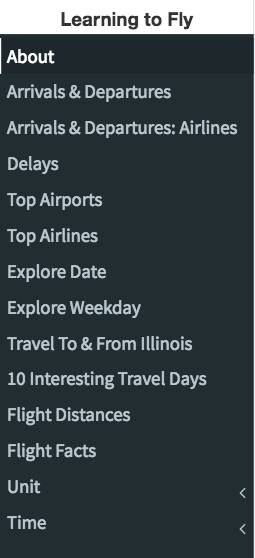
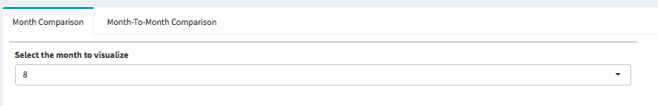
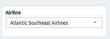
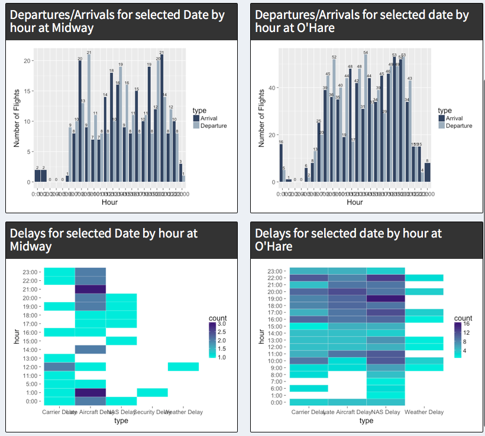
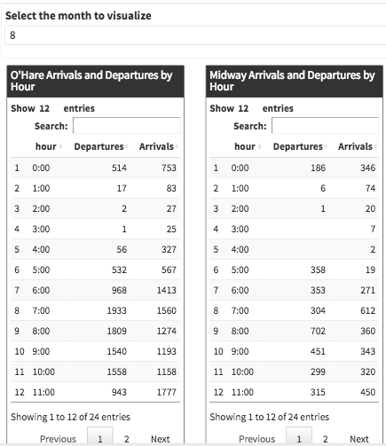
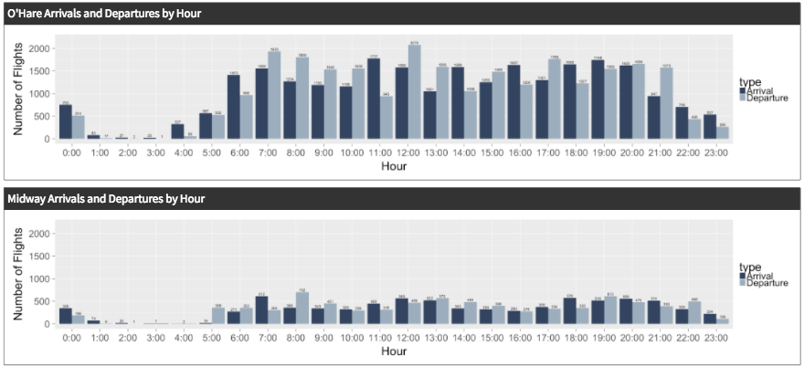
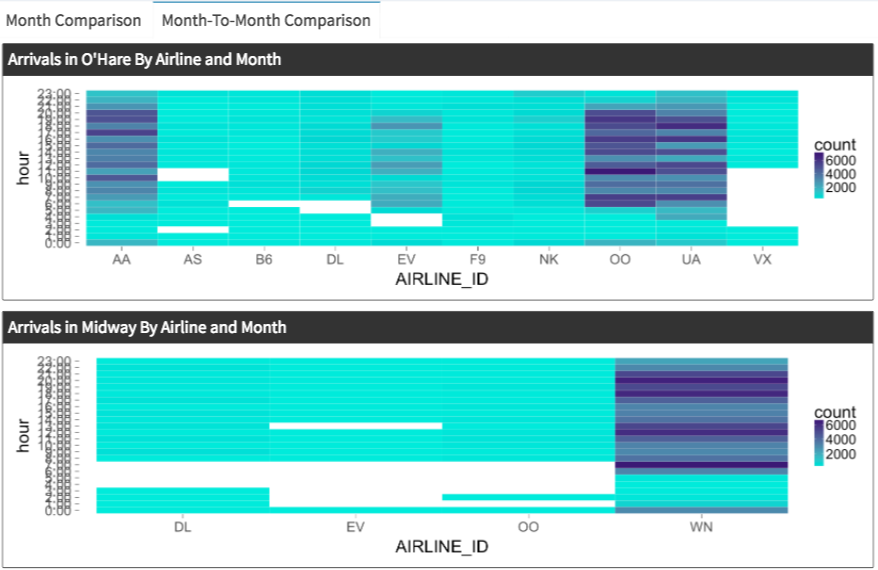

Data
The data utilized was chosen by the professor of the course, Dr. Andy Johnson.
For the application, we created bar charts and pie charts using the ggplot library once the data was processed into R Studio.
___________________________________________________________________________________________________________________
Insights on How to Use
Below is the menu system we have made to organize our tabs

- The application is broken into 11 sub menu items with two helper items: About and Settings
- You select on the item you want and have options on top of each page which render the page
- You have the option to change the units (Mile/Kilometer) and time format (24 hour/12 hour)
- Each menu item is unique and come with a variety of premises that you can choose from: Airport, Time, type of sort, delay, specific time, airline, etc.


Example#1: Find all the given flights in a choosen date with delay data
This requires us to be able to filter through multiple days, we should click on explore dates
The top of the page, there is date tab in which you enter the date in 2017 (Calender style)
 The date entered, 2 bar graphs and 2 heat maps should render which give hourly data of flights
The date is an hourly break down for the date specificed and be able to see both aiports.
The date entered, 2 bar graphs and 2 heat maps should render which give hourly data of flights
The date is an hourly break down for the date specificed and be able to see both aiports.

Example#2: Find Arrivals and Departures for both airports (Hourly/Monthly).
First lets locate the Arrivals and Departures which will bring up to monthly updates
The top of the page, there is month tab which lets you choose from (1-12)
After choosing your specified month, the tables and bar graphs change to that data.

We have a side to side comparison with ORD and Midway which gives the user more options
Now we can see arrivals and departures for both Illinois airports with clarity (Hourly).

If we want to see a month to month comparison, there is a tab on top, which allows us to switch to month to month comparison in a heat map format to visualize.
